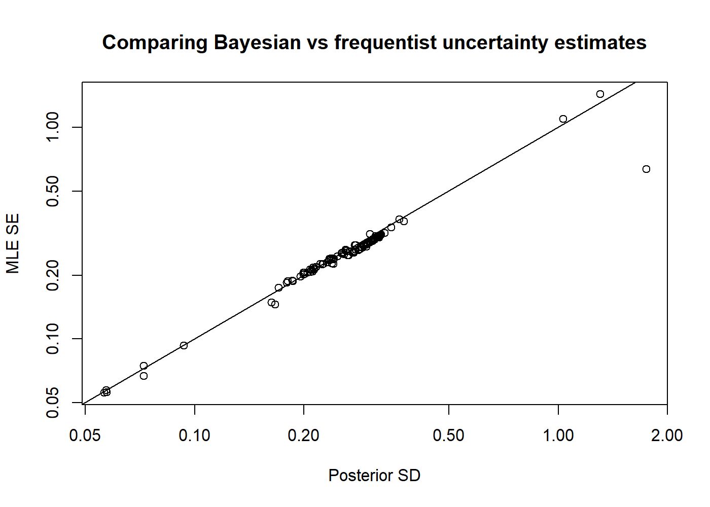

# Names of required packagespackages <-c("dplyr","ggplot2","gt","here","lubridate","remotes","reshape2","shinystan","tidyr","TMB")# Install packages not yet installedinstalled_packages <- packages %in%rownames(installed.packages())if (any(installed_packages ==FALSE)) {install.packages(packages[!installed_packages], repos ="http://cran.us.r-project.org")}# the Bayesian case study requires these extra packagesif (!"StanEstimators"%in%rownames(installed.packages())) {install.packages("StanEstimators", repos =c("https://andrjohns.r-universe.dev", "https://cloud.r-project.org"))}if (!"adnuts"%in%rownames(installed.packages())) { remotes::install_github("Cole-Monnahan-NOAA/adnuts", ref="sparse_M")}# SS3 case studies require r4ssif (!"r4ss"%in%rownames(installed.packages())) { remotes::install_github("r4ss/r4ss")}# Install FIMS: main branch version if on main, dev version on any other branchbranch_name <-system("git branch --show-current")use_fims_main <-grepl("main", branch_name)if (use_fims_main) { remotes::install_github("NOAA-FIMS/FIMS")} else { remotes::install_github("NOAA-FIMS/FIMS", ref ="dev-transform")}# Load packagesinvisible(lapply(packages, library, character.only =TRUE))library(FIMS)library(adnuts)R_version <- version$version.stringTMB_version <-packageDescription("TMB")$VersionFIMS_commit <-substr(packageDescription("FIMS")$GithubSHA1, 1, 7)source(file.path("R", "utils.R"))
R version: R version 4.5.0 (2025-04-11)
TMB version: 1.9.17
FIMS commit: 4fa1cb4
Stock name: Gulf of Alaska (GOA) Walleye Pollock
Region: AFSC
Analyst: Cole Monnahan
Simplifications to the original assessment
See the AFSC-GOA-pollock case study for details on the model. Here the focus is on advanced features.
Script to prepare data for building FIMS object
Code
ggplot2::theme_set(ggplot2::theme_bw())## define the dimensions and global variablesyears <-1970:2023nyears <-length(years)nseasons <-1nages <-10ages <-1:nages## This will fit the models bridging to FIMS (simplifying)## source("fit_bridge_models.R")## compare changes to modelpkfitfinal <-readRDS("data_files/pkfitfinal.RDS")pkfit0 <-readRDS("data_files/pkfit0.RDS")parfinal <- pkfitfinal$obj$env$parList()pkinput0 <-readRDS('data_files/pkinput0.RDS')fimsdat <- pkdat0 <- pkinput0$datpkinput <-readRDS('data_files/pkinput.RDS')
Run FIMS model without using wrapper functions
Code
## set up FIMS data objectsFIMS::clear()estimate_fish_selex <-"fixed"estimate_survey_selex <-"fixed"estimate_q2 <-"fixed"estimate_q3 <-"fixed"estimate_q6 <-"fixed"estimate_F <-"fixed"estimate_recdevs <-TRUE# Set up a FIMS model without wrapper functionssource("R/pk_prepare_FIMS_inputs_old.R")## make FIMS modelsuccess <- FIMS::CreateTMBModel()parameters <-list(p =get_fixed(), re =get_random())obj <- TMB::MakeADFun(data =list(), parameters,random ="re",DLL ="FIMS",silent =TRUE)opt <-with(obj, nlminb(start = par,objective = fn,gradient = gr,control =list(eval.max =10000,iter.max =10000,trace =0 )))max(abs(obj$gr())) # from Cole, can use TMBhelper::fit_tmb to get val to <1e-10rep2 <- obj$report(obj$env$last.par.best) ## FIMS after estimation
Extra analyses
Two extra analyses are demonstrated. First is a likelihood profile over lnR0, showing component contributions and testing for data conflict (a Piner plot). The second is to run the model through the ‘Stan’ software using the ‘tmbstan’ R package. This samples from the posterior, which are put back into the model to get the posterior distribution for spawning stock biomass. Given its long run time the results are saved to a file and read in for post-hoc plotting.
This section demonstrates how to do integration via the NUTS algorithm.
Code
# this takes too long to run for rendering so saving everything to file## Try Bayesian#library(tmbstan)## Some parameters wandering off to Inf so fix those (need## priors). Needs a ton of work but is proof of concept. Major## problem is parallel fails.map <- parameters# TODO: Figure out parameter numbers of ill-behaved parameters because with# random effects there are fewer parameters.## parameters$p[65:66]map$p[c(65,66,114)] <-NAmap$p <-as.factor(map$p)obj3 <- TMB::MakeADFun(data =list(), parameters,random ="re",DLL ="FIMS",silent =TRUE,map = map)parameter_names <-names(FIMS:::get_parameter_names(obj3[["par"]]))# ## Fails when trying to do this in parallel unfortunately# mcmc <- sample_sparse_tmb(obj3, iter=1200, warmup=200, chains=4, cores=1,# seed=1, init='random',# control=list(adapt_delta=.95))# saveRDS(mcmc, file='data_files/pk_mcmcfit.RDS')mcmc <-readRDS('data_files/pk_mcmcfit.RDS')png('figures/MCMC_pairs.png', width=7, height=5, units='in', res=200)adnuts::pairs_admb(mcmc, pars=1:6, order='slow')dev.off()png('figures/MCMC_marginals.png', width=7, height=5, units='in', res=200)adnuts::plot_marginals(mcmc, pars=1:9)dev.off()png('figures/MCMC_uncertainties.png', width=7, height=5, units='in', res=200)adnuts::plot_uncertainties(mcmc)dev.off()png('figures/MCMC_sampler_params.png', width=7, height=7, units='in', res=200)adnuts::plot_sampler_params(mcmc)dev.off()#launch_shinyadmb(mcmc)df <-as.data.frame(mcmc)## for each posterior draw, report to get SSBpostreps <-list()for(ii in1:nrow(df)){if(ii %%500==0) print(ii) postreps[[ii]] <- obj3$rep(df[ii,])}ssbpost <-lapply(postreps, function(x) data.frame(year=years, ssb=x$ssb[[1]][-55])) |> dplyr::bind_rows() |> dplyr::mutate(rep=rep(1:nrow(df), each=54))saveRDS(ssbpost, file='data_files/pk_SSB_posteriors.RDS')ssbpost <-readRDS('data_files/pk_pollock_SSB_posteriors.RDS')g <- ggplot2::ggplot(ssbpost, ggplot2::aes(year, ssb/1e9, group=rep)) + ggplot2::geom_line(alpha=.1) + ggplot2::ylim(0,NA) + ggplot2::labs(x=NULL, y='SSB (M t)', title='Posterior demo (unconverged!)')ggplot2::ggsave('figures/MCMC_ssb_posterior.png', g, width=7, height=4, units='in')
This results in the following plots showing convergence and then finally the posterior distribution of SSB over time. 
Calculate conditional AIC and effective degrees of freedom
Zheng et al. (in review; pdflink) present a new formula to calculate conditional AIC. To do this it calculates the “effective degrees of freedom” and uses that in the calculation of cAIC. A parameter has 0 edf when all information to estimate it comes from a prior or hyperpriors. In contrast it has an edf of 1 when it is informed only by the data. Edf gives a sense of complexity of the model, and cAIC will perform better than marginal AIC (mAIC) for mixed effects models. Here I demonstrate equation 6 on a FIMS model. This approach works on penalized ML and random effects models alike. If Bayesian priors (or penalties) are used it will also calculate the impact of those relative to the data. No priors are used yet so that is left off for now.
Code
# Set up a FIMS model without wrapper functions# the original model (with data)mle <- opt$parhess <- obj$he(mle)## make FIMS model without any data, only hyperdistribution on recdevsFIMS::clear()# this is a hack to trick the script to thinking there's no data (it should all be -999)years <-500:1000source("R/pk_prepare_FIMS_inputs_old.R")years <-1970:2023# build object but DO NOT optimize it, pass the original MLE to itobj_nodata <- TMB::MakeADFun(data =list(), parameters, DLL ="FIMS", silent =TRUE, random ="re")success <- FIMS::CreateTMBModel()parameters <-list(p =get_fixed())parameter_names <-names(FIMS:::get_parameter_names(obj[["par"]]))lrandom <-is.na(parameter_names) # vector of which are affected by priors/penalties# the cAIC calculationsHess_data <- obj$he(mle)[lrandom, lrandom]Hess_nodata <- obj_nodata$he(mle)[lrandom, lrandom]negEDF <-diag(solve(Hess_data, Hess_nodata))# some data processingedf <-data.frame(par='recdev', n=1, edf=1-negEDF) |> dplyr::mutate(year=1969+1:n()) |> dplyr::ungroup()g <- ggplot2::ggplot(edf, ggplot2::aes(year, y=edf)) + ggplot2::geom_point() + ggplot2::facet_wrap('par') + ggplot2::labs(x=NULL, y='Effective degree of freedom') + ggplot2::ylim(NA,1)ggplot2::ggsave('figures/cAIC_edf.png', g, width=7, height=4)tab <- edf |> dplyr::group_by(par) |> dplyr::summarize(n=sum(n), edf=sum(edf)) |> dplyr::arrange(desc(edf))tab <- dplyr::bind_rows(tab, edf |> dplyr::summarize(par='Total', n=sum(n), edf=sum(edf))) |> dplyr::mutate(pct=100*edf/n)gt::gt(tab) |> gt::fmt_number(columns =3:4, decimals =1)q <-sum(lrandom) # no. of random effectsp <-sum(1-lrandom) # no. of fixed effectsjnll <- obj$env$f(mle)cnll <- jnll - obj_nodata$env$f(mle)## conditional AIC (new calculation)cAIC <-2*cnll +2*(p+q) -2*sum(negEDF)round(c(edf=sum(edf$edf), pct.edf=100*(sum(edf$edf)/sum(edf$n)),cAIC=cAIC, mAIC=TMBhelper::TMBAIC(opt)),1)
This appears to work except for the last recruitment deviation which is negative which should be impossible. It is likely the model is misconfigured.